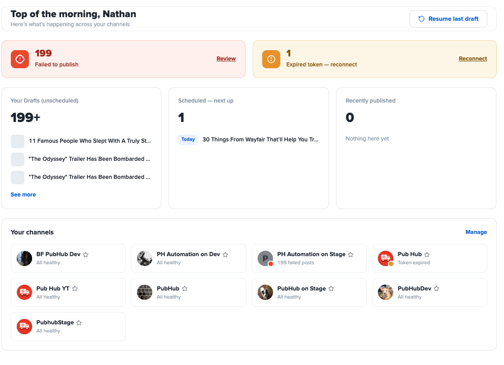
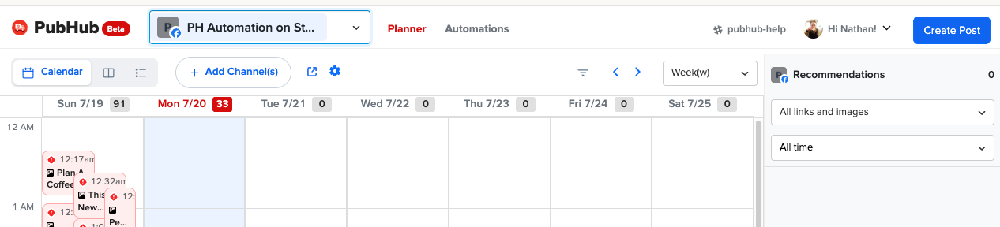

Designed an agent loop that migrated a decade-old Python UI service to Next.js — self-verified every change, paused only at real blockers, every decision logged.
Designed an agent loop that migrated a decade-old Python UI service to Next.js — self-verified every change, paused only at real blockers, every decision logged.
I pioneered an agentic framework migration of a decade-old Python app to Next.js. I designed the agent loop that did the work: it self-verified every change, paused only at real blockers, and logged every decision.
The loop makes a change, verifies it against the test suite, and moves on, escalating to a human only at a genuine blocker. I packaged the whole approach as a reusable blueprint so it could be applied across similar systems rather than re-solved each time.
What the agent shipped, in the new Next.js app — the redesigned home page (status across every channel at a glance) and the planner with its new filter controls:


The run's report — what moved, the blockers hit and how they were resolved, and the human-vs-agent time ledger:
The migration finished in 8% of the estimated engineering time, then became a reusable blueprint to apply across twelve similar systems.